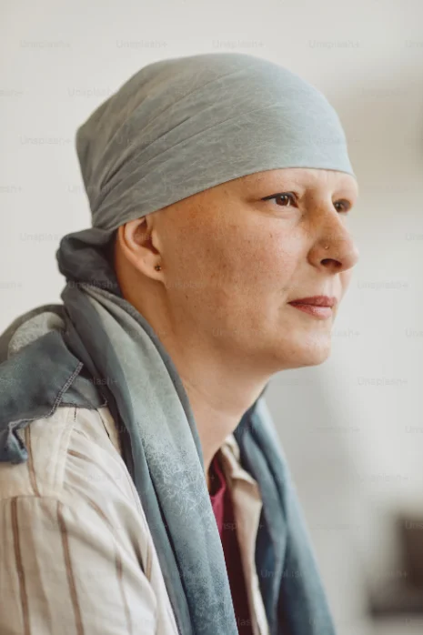

Personne ne devrait renoncer à un traitement à cause de la distance.
Depuis 2003, la Fondation du cancer de Gaspé aide financièrement les personnes atteintes de cancer qui doivent quitter la région pour se faire soigner.
Notre mission
Offrir une aide financière aux personnes atteintes de cancer qui doivent se déplacer hors de la région pour recevoir leurs traitements.
Agir comme centre d’information bilingue pour notre région.
Notre vision
Mettre en place une équipe de soutien active qui offre encouragement, appui émotionnel et information aux personnes atteintes de cancer.
Un impact réel depuis 2003
Notre histoire
La Fondation du cancer de Gaspé est née du rêve de Noreen Hackett. Lors d’un symposium pour femmes, elle a découvert la Fondation Linda LeMore-Brown, créée pour répondre aux besoins financiers des personnes atteintes de cancer dans le district de Bonaventure. Elle a reconnu le même besoin dans la région de Gaspé.
La Fondation a été fondée en juillet 2003 et enregistrée comme organisme de bienfaisance la même année. Elle est gérée à 100 % par des bénévoles et sert les résidents de Grande-Vallée à Coin-du-Banc, y compris Murdochville.
Elle offre une aide financière aux personnes qui doivent se rendre à Chandler, Sainte-Anne-des-Monts, Rimouski, Rivière-du-Loup, Québec, Montréal ou Sherbrooke pour leurs traitements.
La Fondation n’est affiliée ni à l’Association du cancer de l’Est du Québec ni à la Société canadienne du cancer.

« La Fondation du cancer de Gaspé a été une lumière durant l’une des périodes les plus difficiles de ma vie. Leur attention, leur compassion et leur dévouement m’ont donné force et espoir au moment où j’en avais le plus besoin. »
Ce que le cancer ne peut pas faire
Nous offrons à nos membres des ressources, de l’inspiration et la force de faire face au cancer. Car si le cancer est puissant, il a aussi ses limites :
- Il ne peut pas briser l’amour
- Il ne peut pas anéantir l’espoir
- Il ne peut pas affaiblir la foi
- Il ne peut pas détruire la paix
- Il ne peut pas mettre fin à l’amitié
- Il ne peut pas effacer les souvenirs
- Il ne peut pas réduire le courage au silence
- Il ne peut pas envahir l’âme
- Il ne peut pas voler la vie éternelle
- Il ne peut pas vaincre l’esprit